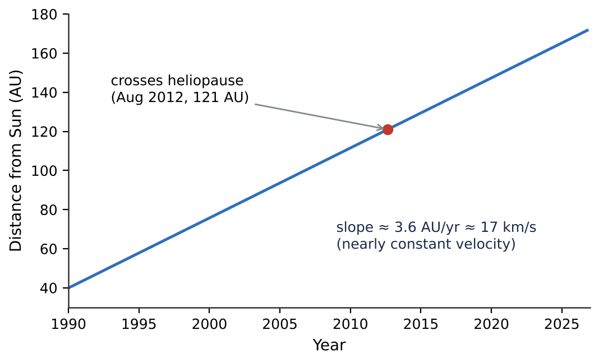
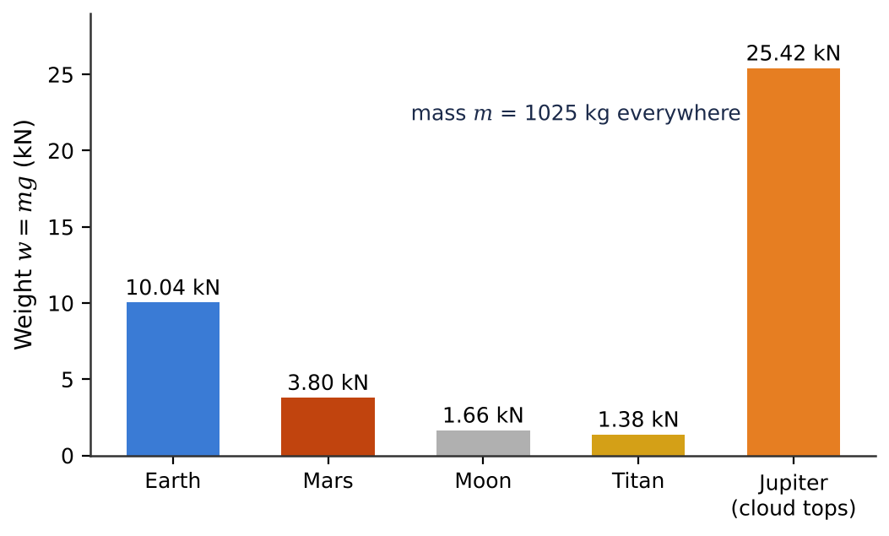
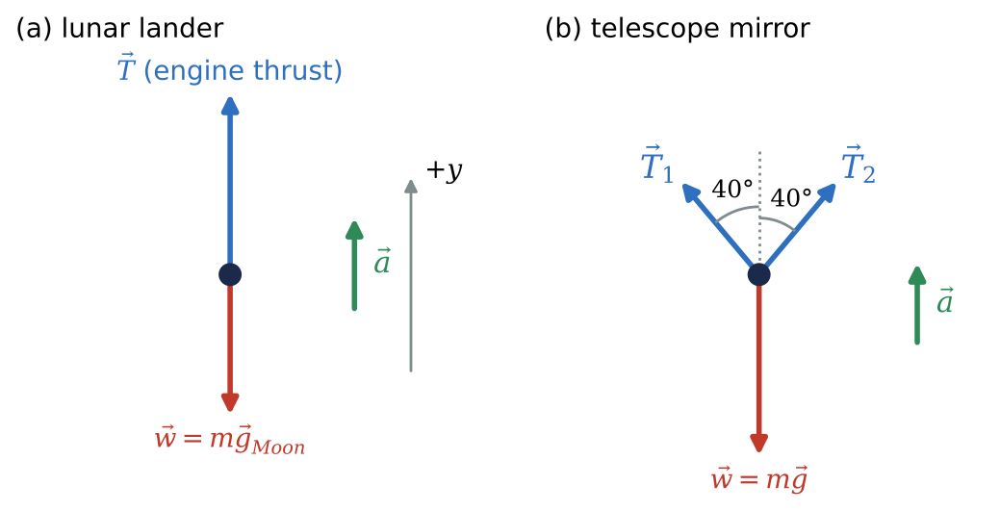

🍎What you will learn
By the end of this module, you can:
- Identify the forces acting on an object, name their sources, and add them by superposition to find the net force.
- Apply Newton's first and second laws, including in component form, and recognise inertial frames.
- Distinguish mass from weight and compute weight and surface gravity on different worlds.
- Identify Newton's third-law pairs and draw correct free-body diagrams.
4.1Force and Interactions
A force is an interaction between two objects that can change an object's motion. It is a vector, measured in newtons (1 N = 1 kg·m/s²). Every force has a source: if you cannot name what is pushing or pulling, the force probably does not exist.
Contact forces act when objects touch: the normal force \(\vec{n}\) from the ground (perpendicular to the surface), friction \(\vec{f}\) (parallel to it), tension \(\vec{T}\) in a cable, and the push of exhaust gas on a rocket nozzle. Long-range forces act across empty space; in astronomy the key one is gravity. Two masses attract each other with
\[F_g = \frac{Gm_1m_2}{r^2},\qquad G = 6.674\times10^{-11}\ \text{N·m}^2/\text{kg}^2,\]
where \(r\) is measured between centres for spherical bodies.
By the principle of superposition, several forces on one object act like a single net force equal to their vector sum, \(\vec{R} = \sum\vec{F}\). Add by components, as in Chapter 1. Three thrusters totalling 570 N may give a net force of only 85 N if they point in different directions. Only add forces that act on the same object.
4.2Newton's First Law
Newton's first law: an object acted on by no net force either stays at rest or moves with constant velocity (constant speed in a straight line). Such an object is in equilibrium: \(\sum\vec{F} = 0\).
The tendency to keep doing what it is doing is inertia. Aristotle thought a push was needed to keep things moving; Galileo and Newton realised that things stop only because of friction and drag. Space is the ideal laboratory. Voyager 1 has had no engine push since 1980, yet its distance from the Sun grows almost perfectly linearly. The Sun's weak inward pull slows it by only about 7 m/s per year. A force is needed to change motion, not to maintain it. Planets need gravity not to keep moving, but to keep their paths curving.
The first law holds only in an inertial frame of reference. Inside a spacecraft firing its engines, a floating pen seems to accelerate backward with no force on it, so that frame is not inertial. Frames moving at constant velocity relative to an inertial frame are inertial. Earth's surface is only approximately inertial: its rotation gives 0.0339 m/s² at the equator (0.35% of \(g\)), and its orbit 0.00593 m/s². That is small enough for most problems.

4.3Newton's Second Law
Push a floating crate on the ISS: it accelerates in the direction of your push. Push twice as hard and the acceleration doubles; push a crate of twice the mass and it halves. Newton's second law:
\[\sum\vec{F} = m\vec{a},\qquad \sum F_x = ma_x,\ \ \sum F_y = ma_y,\ \ \sum F_z = ma_z.\]
The mass \(m\) measures inertia. One newton gives 1 kg an acceleration of 1 m/s². Key points:
- The force is the net external force on a single object.
- \(m\vec{a}\) is not a force; never put it on your list of forces.
- The law holds only in inertial frames; the first law is the special case \(\sum\vec{F} = 0\).
The second law is how astronomers weigh the universe. Measure a moon's centripetal acceleration from its orbit, and the second law gives the force needed; since that force is gravity, you get the planet's mass. It also shows why ion engines work: a thrust under 0.1 N gives only about \(10^{-4}\) m/s², but running for years, \(\Delta v = a\Delta t\) adds up to kilometres per second.
4.4Mass and Weight
Mass is a property of the object (its inertia) and is the same everywhere. Weight is a force, the gravitational pull of a planet or moon on the object, and depends on where it is:
\[w = mg,\qquad g = \frac{GM}{R^2}.\]
So \(g\) depends on both the mass \(M\) and radius \(R\) of the world: 9.80 m/s² on Earth, 3.71 m/s² on Mars, 1.62 m/s² on the Moon, 1.35 m/s² on Titan, 24.8 m/s² at Jupiter's cloud tops. The 1025 kg Perseverance rover weighs \(1.00\times10^4\) N on Earth but \(3.80\times10^3\) N on Mars. It is easier to lift on Mars, yet just as hard to start or stop rolling.
In orbit a bathroom scale reads zero: not because gravity is absent (at the ISS it is about 90% of its surface value) but because astronaut and scale fall together. To measure mass there, use inertia: apply a known force, measure the acceleration, and use \(m = F/a\). The \(m\) in \(F = ma\) (inertial mass) and in \(w = GMm/R^2\) (gravitational mass) agree to better than one part in \(10^{14}\). That is why the hammer and feather fell together on the Moon.

4.5Newton's Third Law
Newton's third law: if object A exerts a force on object B, then B exerts a force on A of equal magnitude and opposite direction:
\[\vec{F}_{A\text{ on }B} = -\vec{F}_{B\text{ on }A}.\]
The two forces of an action-reaction pair are always equal in size, act on different objects (so they never cancel on one object), and are the same kind of force.
Earth and Moon pull on each other with the same \(2\times10^{20}\) N, but the Moon, 81 times less massive, gets 81 times the acceleration. Both actually orbit their common centre of mass, 4700 km from Earth's centre; the same stellar “wobble” lets astronomers detect exoplanets. Rockets push exhaust gas backward, and the gas pushes the rocket forward (thrust). No air or ground is needed. An astronaut who pushes a satellite is pushed back, and the lighter one moves faster.
Careful: a satellite on its pad has weight (down) and normal force (up), equal and opposite, but they are not a third-law pair. They act on the same object and are different kinds of force. The partner of its weight is the satellite's gravitational pull on Earth.
4.6Free-Body Diagrams
A free-body diagram shows one object, isolated from its surroundings, with an arrow for every force acting on it. It is the first step in nearly every dynamics problem. Rules:
- One object per diagram. For a rocket and its payload, draw two diagrams.
- Only forces on the object. The rocket's push on its exhaust is not on the rocket's diagram; the exhaust's push on the rocket (thrust) is.
- Name the source of every force. No source, no arrow.
- Never draw \(m\vec{a}\) as a force; draw the acceleration off to the side if useful.
- Leave out third-law partners; they belong on other objects' diagrams.
- Draw roughly to scale, so an upward-accelerating object has longer upward arrows.
Then choose axes (one along the acceleration if possible) and write \(\sum F_x = ma_x\), \(\sum F_y = ma_y\). A lunar lander firing its engine has thrust \(T\) up and weight \(mg_{\text{Moon}}\) down, so \(a_y = (T - mg_{\text{Moon}})/m\). A satellite in orbit has only one force on its diagram, gravity, which is why it is always accelerating toward the planet.

★Key takeaways
- A force is an interaction with a nameable source; the net force is the vector sum of all forces on one object.
- First law: with zero net force, velocity stays constant. Forces change motion; they are not needed to maintain it. The laws hold in inertial frames.
- Second law: ΣF = ma, applied component by component; it lets astronomers measure masses from orbits.
- Mass (inertia, kg) is the same everywhere; weight w = mg (a force, N) depends on the world, with g = GM/R².
- Third law: forces come in equal and opposite pairs acting on different objects; that is how rockets work in vacuum.
- Always start with a free-body diagram: one object, only forces acting on it, each with a named source.
⟡Worked examples
Each example follows the book's method: Identify and set up, Execute, Evaluate.
Dawn's ion engine produced a thrust of 0.091 N. Take Dawn's mass as 1218 kg and assume the thrust is the only force. (a) What is Dawn's acceleration? (b) By how much does its speed change in one day of continuous thrust? In one year? (Ignore the small loss of mass.)
Show solution (try it first)
Identify and set up: The thrust is the net force, so \(a = \sum F/m\). A constant force gives constant acceleration, so \(\Delta v = a\Delta t\), with 1 day = 86 400 s and 1 yr = \(3.156\times10^7\) s.
Execute: (a) \(a = 0.091\ \text{N}/1218\ \text{kg} = 7.5\times10^{-5}\) m/s². (b) In one day, \(\Delta v = (7.47\times10^{-5})(86\,400) = 6.5\) m/s. In one year, \(\Delta v = (7.47\times10^{-5})(3.156\times10^7) = 2.4\times10^3\) m/s = 2.4 km/s.
Evaluate: The thrust is about the weight of a sheet of paper, and \(a\) is under \(10^{-5}g\). Yet over a year it changes Dawn's speed by 2.4 km/s, enough to travel between Vesta and Ceres. Patience compensates for a tiny force.
The Earth (\(M_E = 5.97\times10^{24}\) kg) and Moon (\(M_M = 7.35\times10^{22}\) kg) are \(3.84\times10^8\) m apart, centre to centre. (a) Find the magnitude of the gravitational force each exerts on the other. (b) Find each body's acceleration due to this force.
Show solution (try it first)
Identify and set up: The two forces are a third-law pair, so they share one magnitude, \(F = GM_EM_M/r^2\). Apply the second law to each body separately.
Execute: (a) \(F = (6.674\times10^{-11})(5.97\times10^{24})(7.35\times10^{22})/(3.84\times10^8)^2 = 1.99\times10^{20}\) N. (b) \(a_M = F/M_M = 2.70\times10^{-3}\) m/s² and \(a_E = F/M_E = 3.33\times10^{-5}\) m/s².
Evaluate: Equal forces, but the Moon's acceleration is 81 times larger, the inverse of the mass ratio. That is why we say the Moon orbits the Earth. Newton checked that \(2.70\times10^{-3}\) m/s² matches the Moon's centripetal acceleration: the famous “Moon test” of his law of gravitation.
A \(1.20\times10^3\) kg lunar lander is descending vertically at 4.0 m/s near the Moon's surface (\(g_{\text{Moon}} = 1.62\) m/s²). Its engine gives an upward thrust of \(2.50\times10^3\) N. (a) Draw a free-body diagram. (b) Find its acceleration. (c) How long until it stops descending, if the thrust stays constant?
Show solution (try it first)
Identify and set up: (a) Two forces act on the lander: thrust \(T\) upward (from the exhaust) and lunar weight \(w = mg_{\text{Moon}}\) downward. No air means no drag. Take \(+y\) up, so \(v_{0y} = -4.0\) m/s.
Execute: (b) \(w = (1.20\times10^3)(1.62) = 1.944\times10^3\) N. Then \(\sum F_y = T - w = ma_y\) gives \(a_y = (2500 - 1944)/1200 = +0.463\) m/s². (c) From \(v_y = v_{0y} + a_yt\) with \(v_y = 0\): \(t = 4.0/0.463 = 8.6\) s.
Evaluate: The acceleration is upward while the lander moves down, so it is slowing. On Earth the same lander would weigh \(1.18\times10^4\) N, almost five times this thrust, and the engine could not stop it. Lander engines are sized for their world.
✍️Activity 4: Forces Across the Solar System
You are the flight dynamics engineer for spacecraft, landers and spacewalks. Draw a free-body diagram for each problem before calculating, then enter a plain number in the requested unit. Numeric answers are accepted within about 2%. Use \(G = 6.674\times10^{-11}\) N·m²/kg² and \(g_{\text{Moon}} = 1.62\) m/s².
8 graded items, 1 point each, plus a short reflection. For each problem, write your solution in the solution box, then type the final answer as a plain number (keep 3 significant figures; small rounding differences are accepted). You may submit up to 2 times; every attempt is recorded. Right after submitting you will see your score and which items are correct or wrong; after your last attempt you will also see the correct answers.
Use these values unless an item gives its own: \(g_\text{Earth} = 9.80\ \text{m/s}^2\), \(g_\text{Moon} = 1.62\ \text{m/s}^2\), \(g_\text{Mars} = 3.71\ \text{m/s}^2\), \(G = 6.674\times10^{-11}\ \text{N·m}^2/\text{kg}^2\), \(M_\text{Earth} = 5.972\times10^{24}\ \text{kg}\), \(R_\text{Earth} = 6371\ \text{km}\).